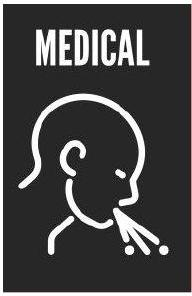

Trauma
23. Trauma Management Pathway
This clinical pathway is intended to supplement, rather than substitute for, professional judgment and may be changed depending upon a patient's individual needs. Failure to comply with this pathway does not represent a breach of the standard of care.
SAMPLE HISTORY
- Signs and Symptoms
- Allergies
- Medication
- Past Medical History/Pregnancy
- Last meal/Last Tetanus Injection/Last Medication/Drug/Alcohol intake
- Events preceding presentation
ACTIVATE THE TRAUMA TEAM (see Trauma Team Activation Criteria)
PRIMARY SURVEY + RESUSCITATION (C-ABCDE)
STOP ANY EXTERNAL MASSIVE BLEEDING IMMEDIATELY (see Specific Measures in Severe Bleeding on the next page)
- C-Spine - Cleared Clinically (see 24. C-Spine Clearance Algorithm)? Perform Manual In-Line Stabilization (MILS) then apply Head Blocks or Blanket Rolls taped to the patient's head and trolley. DO NOT APPLY A C-COLLAR
+ If suspected trauma and not cleared clinically, Head Blocks or Blanket Rolls strapped to the patient's head and trolley - Airway - Open? Maintainable? Intubate?
+ Rapid Sequence Intubation? - Breathing - Rate? SPO2? Air Entry Bilaterally? Pneumothorax? Haemothorax? Flail Chest? Open sucking chest wound?
+ Supplementary Oxygenation? - Non-Rebreather mask
Watch video on our YouTube Channel
+ Immediate decompression for Tension Pneumothorax with subsequent immediate Intercostal Chest Drain Insertion?
+ Emergency Intercostal Chest Drain for Massive Haemothorax or Open sucking chest wound - Circulation - Active Bleeding Control? Pulse? CPR? BP? Signs of Shock? Open Book Pelvic Fracture?
+ Control Active Bleeding;
- Apply a Pelvic wrap to an Open Book Pelvic Fracture
+ Insert 2 large bore IV lines and give appropriate fluid resuscitation (NS/RL/whole blood). Give Tranexamic acid loading dose 15 mg/kg over 10 min then infusion of 1.5 mg/kg/h for 8 hours to ALL trauma patients with, or at risk of, significant bleeding, adults within 3 h of injury with a GCS score of 9-12 or 13-15 with any intracranial bleeding on CT scan
+ FHG, UEC, GXM and request adequate supplementary blood and blood products
+ Extended Focussed Assessment with Sonography in Trauma (EFAST) - ONLY for;
- Penetrating chest trauma - Pneumothorax? Haemothorax? Pericardial Effusion?
- Unstable blunt chest and abdominal trauma - Haemothorax? Hemoperitoneum?
- Unexplained hypotension - ? Free fluid in pleural, pericardial or peritoneal cavity - Disability - GCS? (available in MDCalc) Pupils? RBS?
+ Correct Hypoglycaemia - 50mls 50% Dextrose IV
+Give appropriate analgesia e.g. Fentanyl 1 µg/kg IV (see Analgesia Chart and 42. Pain Management Algorithm for Regional Anaesthesia)
+Give IV Phenytoin (20mg/kg) for Severe Head Injury (GCS ≤ 8) - Expose patient
+ Check temperature and avoid hypo- or hyperthermia
SECONDARY SURVEY (HEAD-TO-TOE SURVEY)
- CNS - Lacerations? Fractures? Signs of Base of Skull Fractures - Racoon Eyes, Battle Sign, Otorrhea, Rhinorrhoea? Focal Neurology?
- Chest - Lacerations? Rib Fractures?
- Abdomen - Lacerations? Distension? Tenderness? EFAST?
- Limbs - Lacerations? Fractures? Distal Pulses and Neurology?
- Log roll patient - Lacerations? Spine tenderness?
Do not forget to CLEAN ALL OPEN WOUNDS with running tap water for at least 10 minute and SPLINT ALL FRACTURES. Give Tetanus Toxoid - see 26. Bites (Animal & Human), Tetanus & Rabies. Give ANTIBIOTICS within 1 hour of injury for ALL COMPOUND FRACTURES. Therapeutic doses of cefazolin, clindamycin, for 48 hrs are appropriate; with contamination, consider anaerobic antibiotics (penicillins, clindamycin, metronidazole); NO ANTIBIOTICS are required for soft tissue injuries unless there is evidence of an infection.
RADIOLOGICAL INVESTIGATIONS
- C-Spine X-rays (AP, Lateral AND Open Mouth) - see 24. C-Spine Clearance Algorithm. If doing a CT head, do CT Spine instead of C-spine X-rays if indicated. C-spine is NOT cleared on X-rays/CT BUT on resolution of patient symptoms
- CXR - ONLY for patients with chest trauma - Pneumothorax? Haemothorax? Lung Contusion? Widened Mediastinum? Rib fractures? Follow-up with CT-Chest plus angiogram for Lung Contusion? Widened Mediastinum?
- Pelvic X-ray - ONLY for patients with; lower abdominal pain, lower back pain, femur fractures, clinically tender pelvis, patients unable to mobilize
- CT Head - ONLY for; GCS <15 (for GCS 15 - see 25. Mild Traumatic Brain Injury Algorithm), Skull fractures including Base of Skull Fractures (DO NOT ORDER SKULL X-Rays)
- CT-Abdomen - For the haemodynamically stable patient with suspected blunt abdominal trauma
- Knee X-ray - See Ottawa Knee Rule in MDCalc
- Ankle X-ray - See Ottawa Ankle Rule in MDCalc
Where a reliable clinical assessment is not possible ALL the investigations should be done.
SPECIFIC MEASURES IN SEVERE BLEEDING
HEAD & NECK
SCALP - Staple, Sutures, Lidocaine/Adrenaline, Pressure Dressing
EPISTAXIS - ANTERIOR - Manual Pressure, Adrenaline Soaked Gauze, Rapid Rhino
EPISTAXIS- POSTERIOR - Rapid Rhino Double Balloon - Inflate Green Cuff 5-20ml AIR
POST-TONSILLECTOMY - Lateral Pressure Magill's + Adrenaline/TXA Soaked Gauze, - consider nebulised TXA 500 mg-1g (adult and kids ≥ 25kg) or 250 mg (<25 kg)
TRAUMA
PENETRATING JUNCTIONAL - Paed Foley Into Wound, Saline In Balloon, Clamp, Suture
PELVIS / LIMB FRACTURES: Pelvic Binder, CT-6 Traction Splint
ARTERIAL LIMB BLEEDING - Direct pressure, elevation, SOF-T Tourniquet if still bleeding
MAX-FAC #s - Reduce Midface, RSI (Double Suction), Epistats, Bite Blocks, Collar

HAEMOPTYSIS - Neb TXA 1g, Imaging to Localise, Bronch/IR, ?Selective Intubation
HAEMATEMESIS - Urgent OGD. If Variceal - TERLIPRESSIN 1.7mg, Balloon Tamponade
INTRACRANIAL - SAH aim SBP < 140, ICH aim SBP < 160, Reverse Anticoagulation
- For Above BP Targets Use LABETALOL 20mg (4ml) Slow IV Over 2 Mins
- Then 40-80mg At 10 Minute Intervals, Up To Total 300mg
1st TRIMESTER - FAST, USS for ectopic, consider Cervical Shock
ANTEPARTUM - Call O&G, USS for Placenta Previa & Fetal Heart Rate
POSTPARTUM - Consider TONE (Uterine Atony 70%) - TISSUE (Retained Placenta (20%) - Genital Tract TRAUMA (1%) - THROMBIN (Coagulopathy - 1%)
- Massage Uterus, SYNTOCINON Slow IV Bolus 5 IU then 40 IU in 11 NS / 4 hrs (250 ml/hr)
- Consider Manual Aortic Compression
- Uterine Balloon Tamponade with Bakri Balloon
- Theatre / Interventional Radiology
PAEDIATRIC
PACKED RED BLOOD CELLS 10-20 ml/kg
PLATELETS 10 ml/kg
TXA iv 15 mg/kg
FRESH FROZEN PLASMA 10-20 ml/kg
CRYOPRECIPITATE 5-10 ml/kg
CALCIUM GLUCONATE 10% 0.3 ml/kg
Trauma Team Activation Criteria
The Trauma team comprises a group of emergency department doctors/clinical officers and nurses, surgeons, anaesthetists and theatre staff, radiographers and other support personnel, who work together as a team to assess and manage the trauma patient. Their actions are coordinated by a team leader who should not touch the patient. The aim of the trauma team is to provide a safe and efficient evaluation of the patient. Identify all injuries and instigate the definitive management of such injuries. Most trauma teams will have about 30 minutes to accomplish this and should work towards achieving this goal.
The Trauma Team should be activated immediately a patient who meets ANY of the criteria below arrives:
- Systolic BP <90 mmHg
- Respiratory rate < 10 breaths/ min or > 30 breaths/ min
- GCS < 12 with torso or extremity trauma
- Pregnant patient (> 20 weeks) with foetal heart rate < 120 bpm or >160 bpm
- Amputation proximal to elbows or knees
- 2 or more proximal long bone fractures
- Suspected spinal cord injury
- Severe maxillofacial injury with airway compromise
- Burns > 15% TBSA
- Pregnant patient with penetrating injury or significant blunt injury
- Gunshot wound proximal to knee or elbow
- Significant penetrating wound to head, neck, chest, abdomen or groin
- Ejection from vehicle
- Pedestrian thrown (hit by a car) or rolled over
- Fall from a height >6 metres (20 feet)
- Simultaneous arrival of 3 or more multi-trauma patients
- Emergency Doctor feels trauma team is necessary for an injured patient
24. C-Spine Clearance Algorithm
This clinical pathway is intended to supplement, rather than substitute for, professional judgment and may be changed depending upon a patient's individual needs. Failure to comply with this pathway does not represent a breach of the standard of care.
25. Mild Traumatic Brain Injury Algorithm
This clinical pathway is intended to supplement, rather than substitute for, professional judgment and may be changed depending upon a patient's individual needs. Failure to comply with this pathway does not represent a breach of the standard of care.
Discharge
A CT interpreted as normal by the Radiologist in a neurologically intact person with a normal mental status allows for safe discharge with appropriate instructions and avoids prolonged ER observation or hospital admission. WRITTEN and VERBAL Discharge Instructions (see MINOR HEAD INJURY DISCHARGE ADVICE) must be provided and should include symptoms to expect after a mild TBI, the time course, the overall positive prognosis, activity limitations, and the point at which a patient return to the ED for further testing.
Minor Head Injury Discharge Advice
On returning home it is important that, if possible, you are accompanied by a responsible adult. While unlikely, there is a small risk of developing complications, so if you experience any of the following symptoms in the next few days you should return to ED as soon as possible.
- Loss of consciousness
- New deafness in one or both ears
- Loss of balance or problems walking
- Any weakness in one or both arms or legs
- Any vomiting
- Clear fluid coming out of your ears or nose
- Drowsiness when you would normally be wide awake
- Increasing disorientation
- Problems understanding or speaking
- Blurred or double vision
- Severe headache not relieved by painkillers such as paracetamol
- Bleeding from one or both ears
- Any fits (collapsing or passing out suddenly)
- Inability to be woken
Dos and Don'ts
- DO make sure you stay within reach of a telephone and medical help in the next few days
- DO have plenty of rest and avoid stressful situations
- DO show this factsheet to a friend or family member who can keep an eye on your condition
- DO take painkillers such as paracetamol for headaches
- DON'T stay at home alone for 48 hours after leaving the hospital
- DON'T drink alcohol until you feel better
- DON'T take aspirin or sleeping tablets without consulting a doctor
- DON'T return to work until you feel ready
- DON'T play any contact sport for at least three weeks without consulting your doctor
- DON'T return to driving until you feel you have recovered. If in doubt consult your doctor.
While most people recover quickly you may experience some of the following symptoms over the next few days and weeks, which don't require a return to hospital:
- Headaches
- Feelings of dizziness
- Nausea
- Sensitivity to light or noise
- Sexual difficulties
- Sleep disturbance
- Memory problems
- Thinking and problem-solving
- Irritability
- Restlessness
- Impulsivity and self-control problems
- Difficulties with concentration
- Feeling depressed, tearful or anxious
- Fatigue
- Difficulties
In most cases, these symptoms will resolve themselves within two weeks. However, in some cases, they may persist much longer. Try not to rush back into normal activities, as this may delay recovery. If you still have any symptoms after two weeks we suggest you come back to the ED and take this factsheet with you. It may be possible to seek a referral to a head injury specialist such as a neurologist or neuropsychologist.
For medical advice, contact the Emergency Department on: _____
26. Bites (Animal & Human), Tetanus & Rabies
This clinical pathway is intended to supplement, rather than substitute for, professional judgment and may be changed depending upon a patient's individual needs. Failure to comply with this pathway does not represent a breach of the standard of care.
Animal Bites
If rabies is a concern, scrub the wound with soap and water for at least 15 minutes, then rinse and apply a disinfectant (e.g. iodopovidone) as soon as possible after exposure. The use of antibiotics in patients with animal bites is controversial, and some studies have shown little benefit. However, pre-emptive early antimicrobial therapy for 3-5 days is recommended for patients who;
- are immunocompromised;
- are asplenic;
- have advanced liver disease;
- have pre-existing or resultant oedema of the affected area;
- have moderate to severe injuries, especially to the hand or face; or
- have injuries that may have penetrated the periosteum or joint capsule
ALL Human bites should receive;
- prophylactic antibiotics
- consider post-exposure prophylaxis for HIV within 72hrs. The risk associated with bite injuries has not been quantified. The victim is usually at low risk unless the biter's saliva is contaminated with blood. The risk is greater to the biter if blood is drawn from the victim's wound because of exposure to mucous membranes.
- Hepatitis B vaccine preferably ≤ 24 hours if not previously immunized
Treatment:
DO NOT SUTURE ANIMAL AND HUMAN BITES. The above wounds should be irrigated copiously, dressed, left open to drain, and examined daily to detect signs of infection. During the first few days after injury, elevation of the injured body part, especially if swollen, accelerates healing. This should be accomplished using a passive method (a sling for outpatients or a tubular stockinet and an intravenous pole for inpatients). ALL infected wounds should be treated. If no signs of infection, delayed primary closure may be done 72 hours after the injury.
Antibiotics
Amoxicillin/Clavulanate 1gm BD x 5-7 days
In Penicillin Allergic Patients:
Clindamycin 300 mg PO QID/600 mg IV TDS OR Azithromycin 500mg PO OD for 3 days
PLUS
Tetanus Toxoid 0.5mg IM
| Previous doses of Adsorbed Tetanus Toxoid | Clean and minor wounds | All other wounds | ||
|---|---|---|---|---|
| Tetanus toxoid | TIG | Tetanus toxoid | TIG | |
| < 3 doses or unknown | Yes | No | Yes | Yes |
| ≥ 3 doses | Only if last dose given ≥ 10 yrs ago | No | Only if last dose given ≥ 5 yrs ago | No |
Rabies Post-Exposure Prophylaxis
The WHO rabies exposure categories are:
- Category I: Touching or feeding animals, licks on intact skin
- Category II: Nibbling of uncovered skin, minor scratches or abrasions without bleeding
- Category III: Single or multiple transdermal bites or broken skin with saliva from animal licks, exposure due to direct contact with bats.
| Rabies Immunoglobulin (RIG) | No Pre-EP | Pre-EP |
|---|---|---|
| RIG provides passive immunization and is administered in the wound site only once, as soon as possible after the initiation of PEP and not beyond day 7 after the first dose of vaccine | Human Ig - 20U/Kg OR Equine Ig - 40U/Kg |
None |
| Rabies Vaccine | No Pre-EP | Pre-EP |
| Intradermal (ID) Dose: 0.1ml Recommended sites: left and right deltoids, thigh or suprascapular areas |
Days 0, 3, and 7 (2-2-2): injections of two 0.1 ml doses of vaccine at different intradermal sites |
One Booster dose (intramuscular or intradermal) at one site on both Days 0 and 3. OR One Booster intradermal dose at four sites in one visit. This consists of four injections of 0.1 ml equally distributed over the left and right deltoids, thigh, or suprascapular areas at a single visit |
| Intramuscular (IM) Dose: 1 vial Recommended sites: Deltoids, lateral thighs or suprascapular areas that drain into regional lymph glands Recommended sites for children aged <2 years: the anterolateral thigh Rabies vaccine should not be administered in the gluteal area, as induction of an adequate immune response is less reliable. |
Reduced 'Essen' vaccine schedule (1-1-1-1) on Days 0, 3, 7 and 14 in healthy patients. A fifth dose is recommended for immunocompromised persons, between days 21 and 28. |
Patients bitten by healthy appearing domestic animals may delay rabies post exposure prophylaxis if the animal is quarantined. These animals should be observed for 10 days, and if they show no sign of infection during the observation period they may be released, and the patient does not need to be vaccinated. Signs of infection in an animal include excessive salivation, aggression, paralysis, daytime activity in nocturnal animals, and impaired movement. If the animal shows any signs of infection, the patient should start the vaccination schedule and continue until the animal has been tested at an approved facility.
Common Venomous Snakes of Kenya
Snake Bites
(BIO-KEN SNAKE FARM, +254 718290324 for information on correct antivenom. http://www.bio-ken.com/)
| Syndrome | Cytotoxicity (Painful progressive swelling) | Neurotoxicity (Progressive weakness) | Haematotoxicity (Bleeding) |
|---|---|---|---|
| Important snakes | Puff adder, Gabon viper, Kenya Horned Viper, Rhinoceros Viper, Red Carpet Viper, Ashe's Spitting Cobra, Black-necked Spitting Cobra, Red Spitting Cobra | Eastern Green Mamba, Jameson's Mamba, Black Mamba, Egyptian Cobra, Eastern Forest Cobra, Gold's Tree Cobra | Coastal Boomslang, North East-African Carpet Viper (Echis), Vine Snake, Blanding's Tree Snake |
| Clinical Picture | Mild: slow progressive painful swelling Severe: rapidly progressive swelling and severe pain, ecchymosis, blisters, severe tissue necrosis, abscess formation, pseudo- and true compartment syndrome, nausea and vomiting, hypotension, bleeding tendency, shock, rhabdomyolysis, renal failure |
Ptosis, diplopia, dilated pupils, difficulties in swallowing, salivation, progressive difficulty breathing, hypoxia | Bleeding from puncture sites, Minor lacerations, development of disseminated intravascular coagulopathy over time |
| Management | - Establish IV access - Give analgesia - Position the limb at the level of the heart - Give IV fluid for shock and renal failure - Treat local complication appropriately |
- Establish IV access - Monitor oxygenation and ventilation closely (HDU) - Intubation and mechanical ventilation may be necessary |
- Establish IV access - Give blood/blood component therapy if indicated - Heparin, antifibrinolytics, thrombolytics are of no value and may be dangerous |
| Indications for Antivenom Antivenom is NOT INDICATED if the patient is ASYMPTOMATIC |
Polyvalent antivenom - Swelling progressive at ≥ 15 cm/hr - Swelling to a knee or elbow from a foot or hand bite within 4 hours - Swelling of a whole limb by 8 hours - Swelling threatening the airway - An associated coagulopathy - Unexplained dyspnoea - Consider antivenom if snake is unknown but envenomation is severe. |
Polyvalent antivenom Triad of (either) 1. paraesthesia, 2. excessive salivation/metallic taste and sweating 3. dyspnoea in the absence of painful progressive swelling (mambas) - Paresis in the presence of significant swelling (non-spitting cobras) |
Monovalent antivenom - Active bleeding - Positive 20 MINUTE WHOLE BLOOD CLOTTING TEST (20WBCT) - Take 2 ml of blood from the patient and pour it into a new, clean, dry glass test tube. - The test tube must be made of glass and NOT plastic. The tube MUST be new. Avoid old tubes that have been washed in detergent/soap. - Leave the test tube undisturbed at ambient temperatures for 20 min. - After waiting for 20 min gently tilt the test tube. - If the blood is all liquid (no clots) then the patient has incoagulable blood. - Laboratory evidence of coagulopathy |
|
Administration of Antivenom:
|
|||
27. Burns Resuscitation Pathway
Assessment
This clinical pathway is intended to supplement, rather than substitute for, professional judgment and may be changed depending upon a patient's individual needs. Failure to comply with this pathway does not represent a breach of the standard of care.
SAMPLE HISTORY
- Signs and Symptoms
- Allergies
- Medication
- Past Medical History/Pregnancy
- Last meal
- Events preceding presentation
ACTIVATE THE TRAUMA TEAM (see Trauma Team Activation Criteria)
Primary Survey (C-ABCDE)
- C-Spine - If suspected trauma, Cleared Clinically (see 24. C-Spine Clearance Algorithm)? Perform Manual In-Line Stabilization (MILS) then apply Head Blocks or Blanket Rolls taped to the patient's head and trolley. DO NOT APPLY A C-COLLAR
- Airway - Open? Maintainable? Intubate? Indications for intubation include presence of pharyngeal burns, air hunger, stridor, carbonaceous sputum and hoarseness, unconscious patients, hypoxic patients with severe smoke inhalation, or patients with flame or flash burns involving the face and neck.
- Breathing - Rate? SPO2? Air entry bilaterally?
- Circulation - Active Bleeding Control? Pulse? CPR? BP? Signs of Shock? ECG for electrical burns?
- Disability - GCS? Pupils? RBS?
- Expose patient
| 1st Degree Burns | - Epidermis only |  |
| - Red, painful, dry (no blisters) | ||
| 2nd Degree Burns | Superficial; | |
| - Epidermis + Upper 1/3 of Dermis | ||
| - Commonly caused by scald (spill or splash) | ||
| Deep; - Epidermis + Lower 2/3 of Dermis - Commonly caused by immersion scald, flame | ||
| 3rd Degree Burns | - Full thickness of Dermis | |
| - Commonly caused by flame, electricity, chemicals | ||
| 4th Degree Burns | - Full thickness of Dermis + Underlying Fat, Muscle and Bone | |
| - Commonly caused by prolonged exposure to flame, high voltage electricity |
Resuscitation
CONSULT A SURGEON IMMEDIATELY AS YOU BEGIN RESUSCITATION OF ANY BURNS PATIENT WITH 3RD OR 4TH DEGREE BURNS AND CIRCUMFERENTIAL BURNS ( also see Trauma Team Activation Criteria)
C - If suspected C-Spine trauma and NOT cleared clinically, Head Blocks or Blanket Rolls strapped to the patient's head and trolley?
A
- Rapid Sequence Intubation? Avoid succinylcholine in patients with burns > 24hrs due to risk of hyperkalaemia. Indications for intubation include presence of pharyngeal burns, air hunger, stridor, carbonaceous sputum and hoarseness, unconscious patients, hypoxic patients with severe smoke inhalation, or patients with flame or flash burns involving the face and neck.
B
- Supplementary Oxygenation? If suspected carbon monoxide poisoning (restlessness, headache, nausea, poor co-ordination, memory impairment, disorientation, or coma), give 100% oxygen via a Non-Rebreather mask at 15L/min for 24 hrs
C
- Control Active Bleeding
- Do not include first degree burns in the calculation of % TBSA
- Patients with <10% TBSA burns can be resuscitated orally (unless the patient has an electrical injury or associated trauma). This needs ongoing evaluation and the patient may still require an IV line.
- Patients with burns involving ≥ 20% of TBSA will require intravenous fluid resuscitation. Insert 2 large bore IV/IO lines and give appropriate fluid resuscitation (RL/NS/whole blood). Parkland Formula (available in MDCalc) - Total fluids over 24hrs = Adults - 2-4mL/Kg/%TBSA, Paeds 3mL/Kg/%TBSA. Give 1/2 of this volume within the first 8hrs of the burns then the next 1/2 over the next 16hrs + maintenance fluid for children < 30 kg . Aim for a urine output of 1 mL/kg/hour in children younger than 2 years (or who weigh <30 kg) and 0.5 mL/kg/hour in adults and older children. If urine output is not adequate, increase fluids for the next hour to 150% of calculated volume until urine output is adequate.
High-voltage electrical injury causes significant muscle injury, so formulas for fluid resuscitation based on percentage of body surface area burned are not applicable. Aggressive fluid resuscitation to maintain adequate urine output (1.0-1.5 mL/kg per hour) should be initiated until the urine is clear of myoglobin (urinary dipstick positive for blood with no red cells in the sediment). Acute myoglobinuric renal failure with life-threatening consequences can occur if fluid resuscitation is delayed.
- GXM and request adequate supplementary blood and blood products if necessary
D
- Correct Hypoglycaemia - 50mls 50% Dextrose IV
- Give appropriate analgesia e.g. Fentanyl 1 µg/kg IV (see Analgesia Chart); Consider procedural sedation with Ketamine for wound dressing (see 45. Procedural Sedation and Analgesia (PSA))
E
- Check temperature and provide warmth to the patient
- Cool any burns < 3 hours old with cold tap water for at least 30 minutes and then dry the patient. In patients undergoing external cooling who have burns covering ≥ 10% of TBSA, monitor body temperature for hypothermia.
- Remove all clothes, jewellery, necrotic tissue & debris
- Wash wound with mild soap and tap water
- DO NOT BURST BLISTERS. Blisters left intact heal faster and become infected less often.
Secondary Survey (Head-to-Toe Survey) and Other Considerations
- In neck burns, a pillow is placed under the patient's head to hyperextend the neck at the shoulders to prevent contractures
- Chest wall burns - Do a checker-box release - consult a Surgeon
- Upper limb burns should be nursed elevated at 45°
- Evaluate 3rd & 4th Degree Burns and circumferential burns for possible escharotomy, consult a Surgeon
- Give Tetanus Toxoid.
- Topical antimicrobial agents or bioengineered substitutes should be applied to all clean, debrided wounds except superficial burns. Prophylaxis with systemic antibiotics is currently NOT RECOMMENDED for patients with severe burns other than perioperatively.
Disposition
Minimum criteria for transfer to a burns centre (Modified from the Australian and New Zealand Burn Association (ANZBA) protocol)
Burn injury patients who should be referred to a burn unit include the following:
- All burn patients less than 1 year of age
- All burn patients from 1-2 years of age with burns > 5% total body surface area (TBSA)
- Patients in any age group with third-degree burns of any size
- Patients older than 2 years with partial thickness burns greater than 10% TBSA
- Patients with burns of special areas - face, hands, feet, genitalia, perineum or major joints
- Patients with electrical burns, including lightning burns. Admit patients with history of loss of consciousness, documented arrhythmias either before or after arrival to the ED (including cardiac arrest), ECG evidence of ischemia, or high-voltage electrical injury
- Chemical burn patients
- Patients with inhalation injury resulting from fire or scald burns
- Patients with circumferential burns of the limbs or chest
- Burn injury patients with pre-existing medical disorders that could complicate management, prolong recovery or affect mortality
- Any patient with burns and concomitant trauma
- Paediatric burn cases where child abuse is suspected
- Burn patients with treatment requirements exceeding the capabilities of the referring centre
- Septic burn wound cases
28. Post Rape Care (PRC) Algorithm
This clinical pathway is intended to supplement, rather than substitute for, professional judgment and may be changed depending upon a patient's individual needs. Failure to comply with this pathway does not represent a breach of the standard of care.
This algorithm should be used with reference to the documents in the latest National Guidelines on Management of Sexual Violence in Kenya available at www.emergencymedicinekenya.org/rape
| RAPE SURVIVOR < 72 hours | RAPE SURVIVOR > 72 hours |
|---|---|
|
|
Treatment
|
Treatment
|
Follow-up
|
On discharge:
|